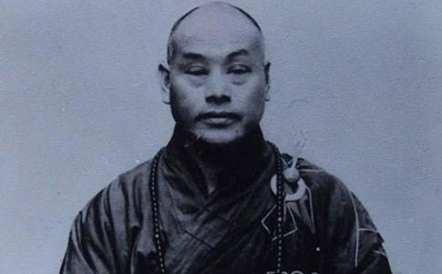

圆瑛大师，代表着一个时代的
近现代，中国汉传佛教有五大高僧之说。他们是
虚云禅师，以专宏
而福建古田出生的圆瑛大师，国民党执政时期，就任“中国佛教会”会长。日寇侵华，诱逼他组建并出任伪“中国佛教会”会长，被他坚决拒绝。共产党执政后，又任中国佛教协会会长。兼宏佛教各宗，犹对楞严学及《
五大高僧生后，对中国大陆与港澳台佛教，对世界汉传佛教产生重大影响的，从某个角度来说，当属太虚法师与圆瑛大师。太虚法师的影响，主要在办教的理论层面上，即提出“人生佛教”。圆瑛大师的影响，主要在办教的组织、制度层面上。继承太虚法师遗志的主要是他学生。而传承圆瑛大师遗愿的主要是其高徒。
圆瑛大师的高徒，知名者众多。这里，谨介绍有代表性的四位。即主要弘法利生于中国大陆的明旸长老、赵朴初居士与主要弘法利生于台湾地区的慈航菩萨、白圣长老。
一、明旸长老 明旸长老，1916年生，福州人。10岁听圆瑛大师讲经，并由其剃度
明旸法师生前，经常为圆瑛大师之辅讲。协助圆瑛大师组建中国佛教会
赵朴初居士，1907年出生，安徽太湖人。早年就学于苏州东吴大学。1927年入住表舅关絅之上海的居所。1928年在关絅之任院长的上海佛教慈幼院服务。同年，上海成立江浙佛教联合会，后改组成立中国佛教会，圆瑛大师任会长、太虚大师等任常务委员，赵朴初任秘书。1935年，皈依圆瑛大师，成为圆瑛大师门下的在家
抗战爆发后，赵朴初在上海慈善团体联合救灾会任常委。他动员掩护300多名青壮年志士奔赴抗战前线。上海沦陷后，又把经过培训的1000多名中青年难民分批送往皖南新四军总部。他在上海，积极宣传抗日救国主张，团结爱国人士，开展秘密斗争。抗战胜利后，他与马叙伦等发起成立中国民主促进会，追随中国共产党，争取民主、反对内战、解放民众。
赵朴初生前，曾任全国政协副主席、中国民主促进会副主席、名誉主席、中国宗教界和平委员会主席、中国佛教协会会长、中国佛学院院长、中国佛学院栖霞山分院院长。2000年去世于北京。
改革开放初期，中国大陆佛教，百废待兴，赵朴初为大陆佛教的复兴，居功甚伟。他继承太虚大师提出的“人生佛教”与慈航菩萨提出的“
慈航菩萨，1895年出生，福建建宁人，18岁时出家于泰宁庆云寺。后弘法于缅甸4年，马来西亚3年，新加坡4年。于马来西亚槟城时，接法圆瑛大师，为其法脉传人。其间，于缅甸，创办《觉世童刊》社、《慈航月刊》社、世界观音万缘会、仰光中国佛学会。于马来西亚，创或办槟城菩提学院、槟城菩提学校、雪州佛学会、怡宝佛学会、槟城佛学会、马六甲佛学会、吉隆坡佛学会。于新加坡，创星州菩提学院、星州菩提学校、星州佛学会、《人间佛教》月刊社。之后，又赴台湾地区，驻锡6年，直至1959年圆寂。在台湾期间，在妙果法师支持下，创办台湾首家佛教院校——台湾佛学院等。
关于慈航菩萨与圆瑛大师的法缘，他在《赠圆瑛老法师》诗中说，“当年太白曾陪座，后又相亲七塔堂，三复沪滨期报本，德风早被忆甘棠。”在他纪念圆瑛大师往生的《风雨声中悼我师》文中，他回忆说，“余二十岁，即听老人讲楞严于天童七塔，其威严之影，犹长浮于目前。”1929年，圆瑛大师与太虚大师等发起成立中国佛教会时，慈航菩萨专程赴会，亲聆二老教诲。1936年，他到上海拜会圆瑛大师，大师安排慈航菩萨于圆明讲堂开示。圆瑛大师还邀他一同观看上海僧侣救护队战地训练。1939年，圆瑛大师率弟子明旸法师等将远行东南亚，为弘法利生，也为抗日救国。慈航菩萨闻讯，即赴上海，为之送行。圆瑛大师了解到慈航菩萨也有往东南亚弘法的意愿和计划时，告知他说，在东南亚一带也有不少同为闽籍的僧人。他曾写诗说：“亲师虽早离师速，直至如今悔已迟。”以此表达他与圆瑛大师交往的感受。慈航菩萨很珍视圆瑛大师付给他的法脉，临终前，特别遗嘱，请同为圆瑛法徒的白圣长老代他传付圆瑛大师法脉予自立、印海、严持、妙峰、常证、会性、真性七位法师，传承圆瑛大师法脉。
①是创办台湾佛学院，收留保护培养由大陆赴台的许多青年学僧，慈航菩萨还因此被当时台湾地区执政当局疑为“匪谍”，被投入牢中。台湾佛学院的学僧，后来，成为台湾佛教的中坚力量，如尚在世的星云法师、净良法师、真华法师等。有的后来从台湾到东南亚及美国，也成为所在国佛教界的骨干。
②是坚决宏传中国传统的佛教模式，坚决抵制反对日本模式佛教在台湾的传播，使日本佛教势力渐而淡出台湾。
③在太虚大师“人生佛教”思想基础上，正式提出“人间佛教” 理念，并创办《人间佛教》月刊，设立《人间佛教》月刊社，配合倡导“人间佛教”精神。
④著作等身，有200多万字。
⑤成就台湾地区的首尊
慈航菩萨遗愿回归祖庭，经各方努力，其肉身圣像分身已于2007年回归出家祖庭——泰宁庆云寺。
四、白圣长老白圣长老，1904年出生，湖北省应城县人。1921年出家，曾随圆瑛大师学习楞严学。三十年代中期，到上海后，于圆瑛大师任会长的中国佛教会任干事一职。经常随侍大师左右，并为辅讲。1937年夏，接法圆瑛大师，为大师法徒。“八一三”战事爆发，日寇侵华，白圣长老任中国佛教会难民收容所主任。1944年，圆瑛大师创圆明楞严专宗学院，白圣长老被任命为教务主任。1949年，赴台湾地区。
当时，慈航菩萨因被执政当局疑为“匪谍”，遭逮捕坐牢，白圣长老与孙立人将军夫妇等多方呼吁营救。1960年，白圣长老被推为台湾地区“中国佛教会”理事长，任职30余年，传戒20多场，度
白圣长老，对台湾佛教的主要贡献，是通过传戒与对台湾“中国佛教会”等相关团体的运作，培养了大量的遵循汉传佛教传统的僧人、僧才，为台湾佛教后来之复兴，奠定了基础。同时，弘传中国佛教优良传统，抵制消弭日本佛教的影响。并积极参与世界佛教组织的活动，客观地使中国汉传佛教又一次逐渐走向世界舞台。
结语 圆瑛大师，代表着一个时代的佛教，而明旸法师、赵朴初居士、慈航菩萨、白圣长老，又代表又一个时代的佛教。在圆瑛大师时代，由于“中国佛教会”的创生，一盘散沙的中国佛教界，得到了整合。在明旸法师、赵朴初居士的时代，在中国佛教协会领导下，中国大陆佛教，落实政策，由弱到强，终于有了今天的蓬勃气象。而在慈航菩萨、白圣长老的时代，在台湾“中国佛教会”整合引导下，台湾地区佛教，追根溯源，扶正去邪，终于出现了比较兴旺的景象，并且走向了世界，尤其东南亚与欧美。由于圆瑛大师及其四大高徒的推动，佛教各类团体在中国大陆与台港澳，在东南亚及欧美，如雨后
有人说，近现代，如果缺少了圆瑛大师及其四大高徒，世界汉传佛教的面目，不知又会怎样，谁也不敢去想象。